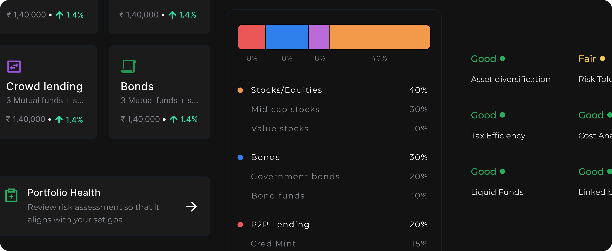

Guided investing platform
A concept for helping beginners move from onboarding to portfolio creation without feeling dropped into financial complexity too early.
Personal project / Investing UX

Helping beginners move from confusion to confident investment decisions through structured flows, contextual learning, and portfolio guidance.
This exploration focuses on reducing fear, confusion, and decision paralysis by making the journey easier to understand before asking users to commit.
Context
First-time investors don’t struggle with access — they struggle with understanding. Too many options, unclear terminology, and fear of making the wrong move create hesitation before action.
A concept for helping beginners move from onboarding to portfolio creation without feeling dropped into financial complexity too early.
Users with intent to invest, but low confidence in choosing, interpreting, and trusting the path in front of them.
When early steps feel opaque, hesitation grows, external advice takes over, and onboarding loses momentum before action begins.
Problem statement
How might we help first-time investors make confident decisions without feeling overwhelmed or dependent on external advice?
What I learned
Users don’t trust their own investment decisions in the first session.
They rely heavily on friends, YouTube, and trend-led advice when the product doesn’t explain itself.
They don’t understand why something is being recommended, only that it has been recommended.
Too many choices up front create hesitation, re-reading, and stalled progression.
Fear of doing it wrong is stronger than the desire to start, even when users have intent.
Design principles
Reduce raw option volume before asking for commitment.
Turn intimidating decisions into smaller guided steps with context.
Recommendations need rationale to feel trustworthy and usable.
Understanding the path matters more than accelerating through it.
The system I designed
Helps users understand themselves before being asked to choose.
Turns intimidating choices into guided recommendations with clearer framing.
Makes allocation, health, and next steps easier to interpret at a glance.
Brings education into context instead of separating it from action.
Adds reassurance through peer signals without replacing user agency.
Key flows
What changed and why
Beginners needed help articulating goals, risk, and confidence before comparing products.
The system becomes more opinionated, but reduces abandonment caused by blank-state uncertainty.
Users understood category intent faster than product-specific language and investment terms.
Some fidelity is deferred, but the early flow becomes easier to enter and trust.
Users needed to know whether their choices looked healthy before interpreting detailed allocation logic.
Signals are less granular than expert dashboards, but dramatically easier to understand for beginners.
Education works best when it answers the exact question the current step creates.
The system needs stronger anticipation of confusion, but it avoids sending users into side journeys.
How the experience became clearer
Users faced investment choices before understanding what they meant.
ToQuestions, cues, and recommendations created a clearer way forward.
Onboarding, portfolio creation, and learning felt disconnected from each other.
ToThe journey moved as one system with clearer step-by-step progression.
Numbers and categories were visible, but not immediately understandable.
ToPortfolio health and next steps became easier to read at a glance.
What this unlocks
Clearer steps reduce re-reading and second-guessing in the earliest decisions.
Users understand why a path is being suggested before committing to it.
Integrated explanation reduces the need to leave the product for validation.
Users move through onboarding with more predictable momentum and less friction.
What this taught me
Designing for beginners is about simplifying decisions, not just simplifying UI.
Clarity comes from sequencing information well, not reducing it blindly.
Trust grows when users understand why something is happening, not only what to do next.
Product systems feel stronger when learning and action happen together instead of apart.
What I’d take further
Full case study
This page is the distilled version of the project. The full deck includes detailed flows, rationale, iterations, and supporting screens.